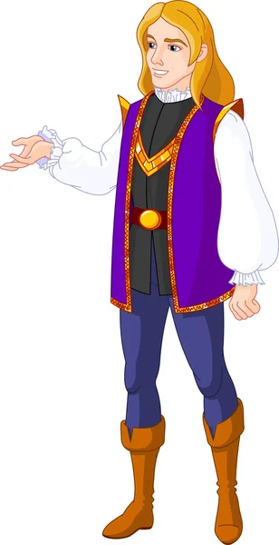

This story talks about a prince that needs to reach his princess.
The reader will perceive a unique experience by deciding himself/herself the story and how it will end, in a good or in a bad way, it's letting him/her write their own version of the story.
The reader will also percieve a unique experience by understanding on their own the hidden meaning in the story and reflecting on it's importance.
Click the word continue to read the story.
 note: I created a new page and wrote how the story starts. I also added 3 pictures, 1 of a prince, 1 of a princess, and lastly the image of the price's unknown village called Walland.